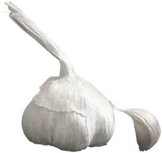
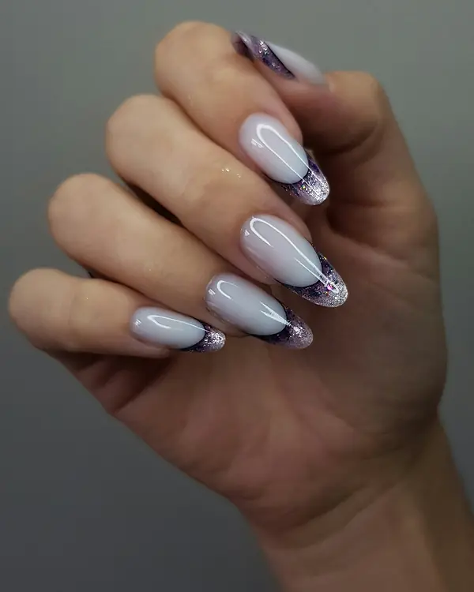
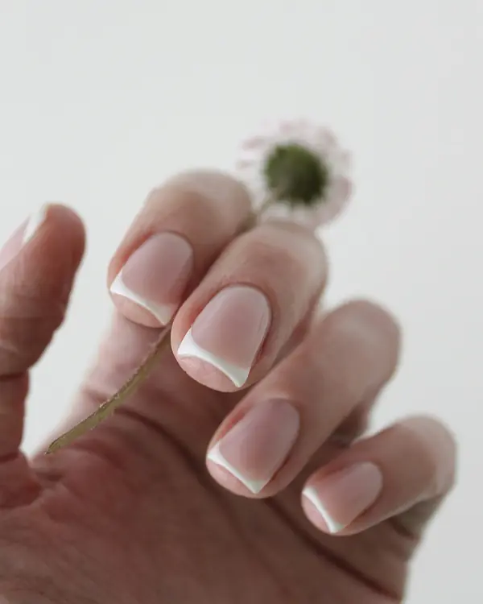
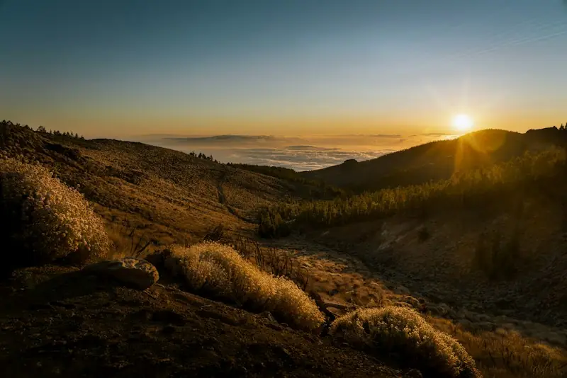
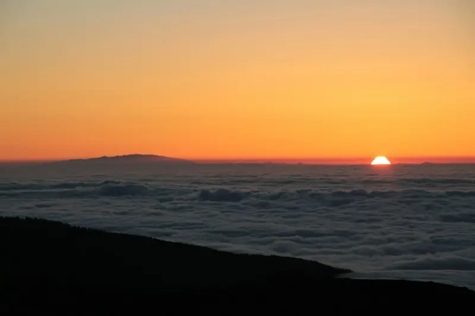
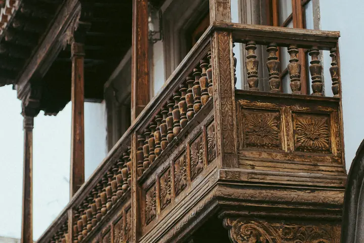

1 de 4 · 16:30
Recogida
Te recogemos en tu hotel del Puerto de la Cruz o de La Orotava. Furgoneta pequeña, ocho personas como mucho, y una manta por cabeza para la noche.
Ten ways a small-business site can answer when you scroll, tap or move between pages: headers that react, pages that morph into each other, a menu that sorts itself, a contact button, a progress ring and a switch that turns all of it off.
Scroll through on your phone, then send me the codes worth keeping.
I1 and I7 follow your finger as you scroll (Chrome, Edge, Samsung Internet, Safari 26 or newer; elsewhere you see the finished state). I3, I4 and I10 morph with View Transitions (Chrome, Edge, Safari 18.2 or newer; Firefox shows the result without the morph). I9 switches every effect on this page off. The businesses are the fictional showroom ones; every price and claim is an example.
The name starts big at the top of the page. As you scroll it shrinks and slides into a slim header bar, which then picks up a hairline and a soft shadow. For any business whose name is its strongest asset: a tasca, a barber, a casa rural.

Puerto de la Cruz · cocina canaria
Tapas de siempre, mojo de la casa y pescado del muelle.
Precios de ejemplo
A normal header until it reaches the top of the screen. Once it sticks, it fades in a frosted background, a hairline and a shadow, and its button turns from "Contacto" into "Reservar mesa". For restaurants, terraces and anyone with one main action.

Ocaso · La Caleta · ejemplo
Pescado del día, vino frío y el sol cayendo detrás de La Gomera.
Sigue bajando: la barra de arriba se queda fija, se vuelve translúcida y el botón pasa a "Reservar mesa", que es lo que la gente quiere hacer cuando ya ha visto la terraza.

Mesas en primera fila desde las 18:00. Cocina abierta hasta las 23:00. Horario de ejemplo.
Tap a room: the photo and the name fly from the card into the hero of the room's own page, and fly back when you return. Real separate pages, so each room can rank in Google. For rooms, tours, treatments or dishes.
Casa Tea · La Orotava · toca una habitación
Tap a filter: the dishes that don't fit fade away and the rest glide into their new places instead of jumping. For a carta, a treatment list or a tour catalogue.
Tasca Picón · carta de ejemplo
6 platos
16,50 €
18 €

8,50 €

12 €
6 €

9 €
Precios y etiquetas de ejemplo. En una carta real, el restaurante confirma los 14 alérgenos.
One round button in the corner. Tap it and WhatsApp, call, directions and Instagram spring out, in a column or in a quarter circle. Escape, a tap outside or picking one closes it. For salons, barbers, trades: anyone whose clients mostly message.
Lúnula Studio · Los Cristianos · botones de ejemplo

Pide cita como prefieras: el botón de la esquina.
Acciones de ejemplo: no llaman ni escriben a nadie.
A gift voucher built from three layers at different depths, with a sheen that slides across. It tilts towards the mouse on a computer, follows a sideways drag on a phone (an up-or-down swipe still scrolls the page), and gives a little wobble when tapped. For gift cards, tour tickets, a membership card.
Lúnula Studio · tarjeta regalo de ejemplo
Tarjetas de 25, 50 u 80 € para uñas, pestañas o cejas. Te la mandamos por WhatsApp o la recoges en el estudio. Importes de ejemplo.
Arrástrala de lado o tócala.

Lúnula Studio
Tarjeta regalo
50 €
Uñas o pestañas · válida 12 meses · ejemplo
A small ring in the corner fills as you read through a long page. Tap it for a list of the parts, and jump to any of them. For a tour day, a long service page, a wedding venue's "your day" page.
Cielo Ucanca · un día de excursión · horario de ejemplo
1 de 4 · 16:30
Te recogemos en tu hotel del Puerto de la Cruz o de La Orotava. Furgoneta pequeña, ocho personas como mucho, y una manta por cabeza para la noche.

2 de 4 · 17:15
Por el pinar de Aguamansa hasta Las Cañadas, con dos paradas en los miradores. La temperatura baja diez grados en una hora.

3 de 4 · 19:40
El sol se esconde por debajo del mar de nubes. Cava o chocolate caliente, a elegir.

4 de 4 · 21:00
Telescopio en el Llano de Ucanca y un guía que te enseña a encontrar la Polar. Vuelta al hotel hacia las 23:00.
A phone and a browser window drawn in CSS, with real, live HTML inside rather than screenshots. Scroll the menu inside the phone. For the QR-menu lane, and for showing a client their new site in a pitch.
Tasca Picón
ESEN
TapasPescadoPostres
Pulpo a la brasa
Con papas y mojo rojo
Moluscos
16,50 €
Papas arrugadas
Mojo rojo y verde
5,50 €
Queso asado
Con mojo verde
Leche
8 €
Tostada de aguacate
Masa madre y sésamo
Gluten · sésamo
8,50 €
Pescado del día
A la plancha, ajo y limón
Pescado
18 €
Gambas al ajillo
Guindilla y pan
Crustáceos · gluten
12 €
Bienmesabe
Almendra y miel de palma
Frutos secos · huevo
5 €
Quesillo
El de la casa
Leche · huevo
4,50 €
Precios y alérgenos de ejemplo
Casa Tea

Tres habitaciones, desayuno de la finca y el Teide en la ventana.
Ver habitacionesA visitor can turn animation off for the whole site, or leave it on "Auto" to follow their phone's setting. The choice is remembered on that device. Try "No", then scroll back up to I1, I5 or I7: they stand still. Good practice on any site with scroll effects.
Fase Neutro · Adeje · ajuste de ejemplo
Animaciones
Ahora: animaciones según tu teléfono.
Este ajuste necesita JavaScript. Sin él, la página ya se muestra sin animaciones.
Everything that moves. Content stays exactly where it is; it just arrives without the motion. The choice survives a reload.
Tap a photo and it grows out of its spot to fill the screen. Tap anywhere, press Escape or scroll, and it shrinks back. For room galleries, finished jobs, a portfolio, dishes.
Casa Tea · la casa · toca una foto
Seis rincones de la casa. Toca cualquiera.
Motion lab · Teide Digital · internal, not indexed. Photos: Unsplash licence, from the showroom samples.